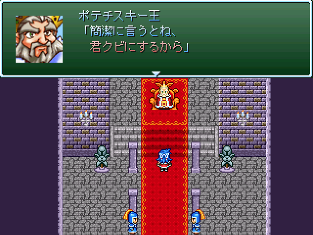

No.81-勇者失職～もしもリリアがクビになったら～
No.81-勇者失職～もしもリリアがクビになったら～

■勇者失職～もしもリリアがクビになったら～ Hiro
紹介文
約二年ぶりの祭り参加です。 本作は意地でも遅刻すまいと昨年のGW用に向けてｔｋっていた作品ですが 人様のお手伝いとか完成度80％あたりで内容に納得がいかなくなったりとか どう見ても締切に間に合わないことが発覚してからモチベが激減とかしたために ほぼ丸一年間エターナルの海に塩漬け状態になっていたもので、 今年向けにｔｋっていた作品が猶更間に合わないと判断してから 急遽サルベージして完成させたものです。 それなのに結局遅刻しているとか、もうね（ｒｙ しかしここ数日（2011年5月3日現在）でリリアの突如かつ急激なキャラ崩壊が 進行しているのを見ると何だか数奇な運命のようなものを感じたり感じなかったり… 内容は大体20～30分程度の見るゲです。今回は操作要素はありません。 大作の合間にちょこっと遊んで頂ければ幸いです。
管理人から一言: 最近のリリアの扱いはなんというか・・・
© VIPRPG